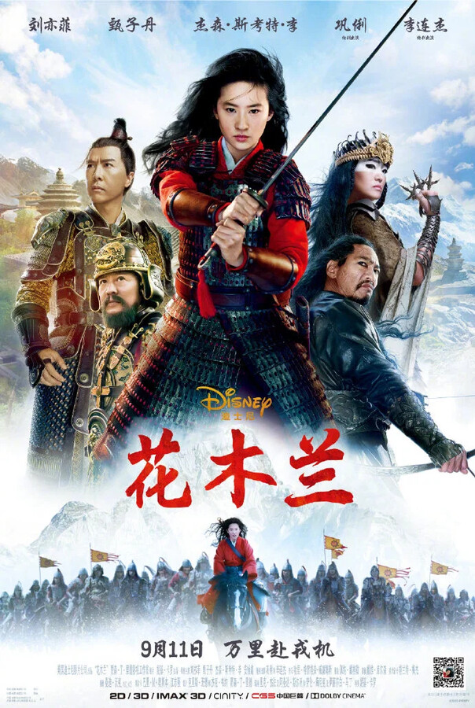

Мулан

Изданный императором Китая указ о призыве на службу в Имперской армии одного мужчины из каждой семьи для защиты страны от северных захватчиков вдохновляет Мулан, старшую дочь почётного воина, занять в войсках место своего больного отца. Маскируясь под мужчину, девушка подвергается испытаниям на каждом шагу, проявляя свои внутреннюю силу и истинный потенциал. Мулан ждёт эпичное путешествие, которое превратит её в доблестного воина, позволит заслужить уважение благодарного народа и стать гордостью отца.
Вики